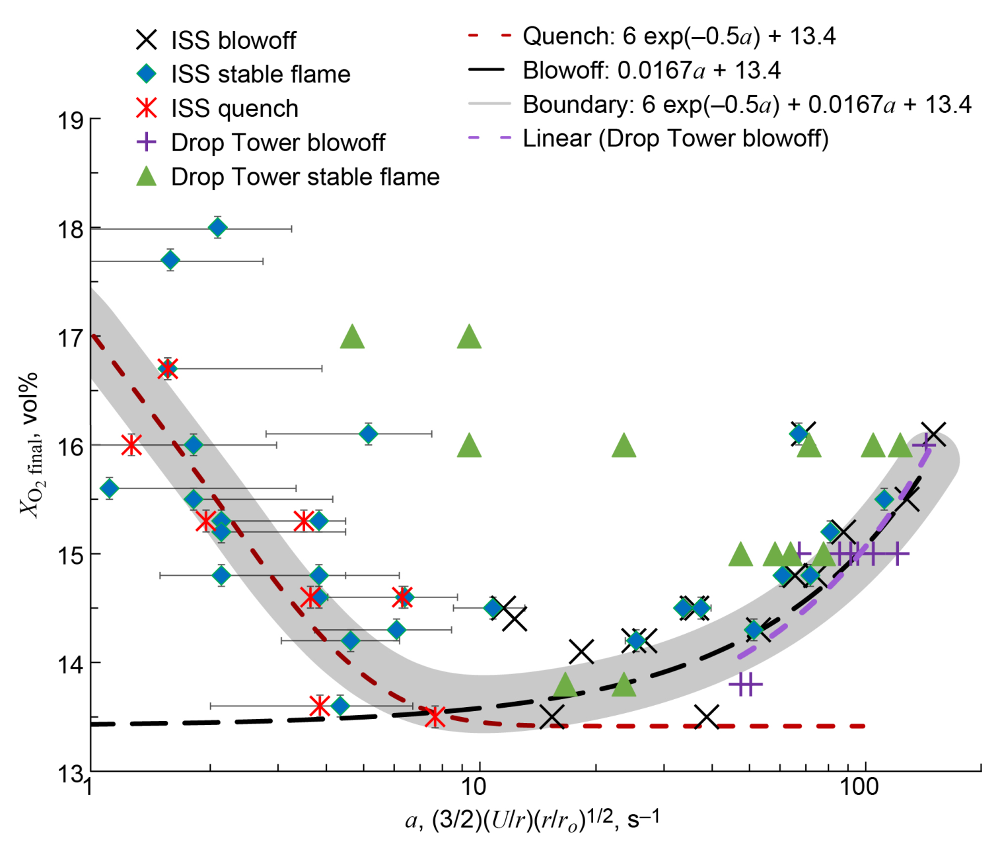

How the AI Works
8 AI stages turn NASA's reports, raw tables and flight imagery into fire-safety insight. Each card links to its output below.
LLM Agents Extract the Data
Language-model agents read NASA reports and PSI datasets, classify each flight test's outcome and digitize published figures.
VerifyNothing Unverified Gets In
Every extracted number is checked word for word against its source page and file hash. A hallucinated value fails the build.
LearnBayesian Machine Learning
A physics-shaped Bayesian model learns the boundary between burning and going out, and knows how sure it is.
TestValidated Across Platforms
Trained on one platform, tested on the other, and scored against the Earth rule engineers use today.
SeeComputer Vision on Flight Imagery
The flame front is tracked in NASA's own flight photos to re-measure how fast fire spread in orbit.
ReasonChecks the Papers’ Own Claims
Automated reasoning tests published statements against the data and against each other, and flags conflicts.
DecideActive Learning Plans Experiments
It picks the next tests that would teach the model the most, inside what the ISS hardware can do.
AskAn Analyst That Cannot Make Numbers Up
A local language model answers questions only through tool calls. Any number not in a tool result is refused.
Flammability Boundary
Probability that PMMA keeps burning, by oxygen level and flow stretch rate, with a 90 % band around the limit.
The NASA Figure These Points Were Read From

BASS-II Summary Report (NASA/TM-20210011385), Figure 6.10, PDF page 84. Rendered at 300 dpi and hash-pinned before digitizing.
Provenance
Click a point on the 2D boundary or a row below to see its source page, quote and extraction record.
Validation
Trained on one platform, tested on the other, and scored against the normal-gravity rule.
Next Experiments
Tests that would shrink the uncertainty most, inside what the ISS hardware can actually do.
Habitat Risk
The ISS cabin and planned Moon and Mars atmospheres. Where no flight data exists, IGNIS says so.
Earth Test vs Orbit, by Material
Saffire-II burned the same samples in orbit and in a 1g ground test. NASA's raw table, compared row by row.
BASS-II Flight Tests by Material
Outcomes quoted from the report's test notes, oxygen from NASA's PSI-25 table. Only tests with a reported flow enter a boundary fit.
Re-measured from NASA Flight Imagery beta
The flame front tracked in NASA's top-view stills (1 per second), compared with the spread rate the report states. The length scale is the main uncertainty.
Consistency Checks
Published claims tested against the data and against each other. Every quote is verified on its PDF page.
Ask the AI Analyst
Real questions answered by a local language model that may only use IGNIS's tools. Recorded runs, shown exactly as they happened. The guard blocks invented numbers; it cannot judge meaning, so each answer is also reviewed.
Data and Timeline
Campaigns, test years and every source document behind the numbers on this page.